The Dailies
Record what you play, watch it back from any angle, turn it into shots and export them as video. Dailies also keeps a log of what happened while you played, so the good bits are easy to find. Every picture here was taken from the running game.
Install
To install Dailies
- Build the jar with
gradlew build. It is written tobuild/libs/dailies-1.21.1-0.1.0.jar. The video encoder is packed inside it, so nothing else needs installing. - Put the jar in your
modsfolder, with NeoForge 21.1 for Minecraft 1.21.1. - Start the game. Three small square buttons sit above the language button on the title screen: Recordings, Settings and the moments page.
Dailies is for your own game only. A server never needs it, and you can join any server with it installed.
Everything it writes goes in dailies/ in the game folder: recordings, moments, exports, the bin, and the shared and import folders for swapping sessions with friends.
Mods it works beside
None of these is needed. Dailies switches on its support for each only when it is installed.
| Mod | What Dailies does with it |
|---|---|
| Create | Contraptions record and play back with all their blocks, turning as they did. |
| Sable, Create Aeronautics | Physics craft and their passengers play back where they flew. Craft are logged as moments. |
| Sodium, Iris | Playback and export wait for their terrain and keep shader packs on the video's clock. |
| Simple Voice Chat | Voice chat can be recorded, heard in playback, exported and written down. |
| Distant Horizons | Playback shows the far terrain you built while playing, from a copy Dailies keeps, so your real worlds' data is never changed. Recordings made before Distant Horizons was installed build far terrain from what they hold. |
Tested versions: Create 6.0.10, Sable 2.0.6, Create Aeronautics 1.3.2, Iris 1.8.14, Sodium 0.8.13 and Distant Horizons 3.3.3.
Some things only a server knows: a boss fight and who fought it, a close call, a totem saving someone, a big fall, an explosion, a lightning strike, taming, breeding, treasure fishing, a skipped night, a player's first join, a craft assembled or lost, and a Create train leaving or reaching a station. The companion is a small separate server mod that tells each player's game about these, so Dailies can log them as moments.
- To use it, put
dailies-companion-1.21.1-<version>.jarin the server'smodsfolder. Players need nothing extra. In singleplayer, put it beside Dailies. - It is optional on both sides. A player without Dailies is sent nothing; a server without it simply gives Dailies less to log.
- Operators and command blocks can send their own moments:
/moment send @a town_founded Founded the town of Brasswick. - Its settings, which events it raises and how near other players must be, are in
config/dailies_companion-common.toml.companion/README.mdlists everything.
Record
To make a recording
- Join any world or server and press Esc.
- Press Start recording in the Dailies column at the side of the pause menu. A small plate with a red lamp and a clock shows in the top left while it runs.
- Play as usual. Pause recording stops the clock; nothing is captured until you resume.
- Press Finish recording. Dailies asks for a name, with the date and time filled in.
Cancel recording throws away what was captured, after asking. The column also has Recordings, Moments and Settings. The setting "Pause Menu Buttons" moves the column to the left.
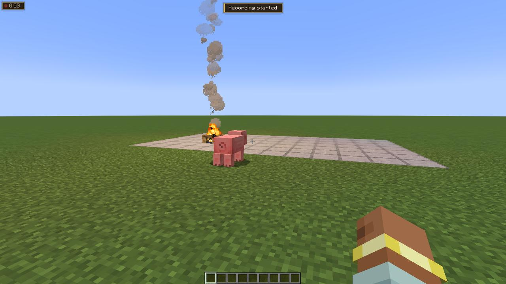


Keys
Find them under Options, Controls, Key Binds, Dailies. The recording keys are unbound until you choose keys for them.
| Key binding | Does |
|---|---|
| Start or finish recording | Starts a recording, or finishes the one running. |
| Pause or resume recording | Pauses or resumes. |
| Drop marker 1 to 4 | Drops a coloured marker on the timeline at this moment. Each has its own colour, description, and whether it stores where you stand, in the settings. |
| Log a moment | Logs a moment labelled "Good moment" (the setting "Moment Key Label"). The quickest way to flag "that was good" without typing. |
The /dailies command
Type it in the chat. It belongs to your own game, so it works on every server and no server ever sees it. Sub-commands and marker colours complete with Tab, and every one answers in the chat.
| Command | Does |
|---|---|
/dailies start | Starts a recording. |
/dailies finish [name] | Finishes it. With a name, saves under that name without asking. |
/dailies pause, resume | Pauses or resumes. |
/dailies cancel | Throws the recording away, after asking. |
/dailies mark [colour] [yes|no] [words] | Drops a marker. Every part is optional. Colours are red, orange, yellow, green, cyan, blue, purple and white. yes stores where you stand. |
/dailies moment <words> | Logs a moment with those words, for example /dailies moment that was good. |
/dailies moments | Opens the moments page in your web browser. |
/dailies config | Opens Dailies' settings. |
/dailies hide | Hides everything of Dailies on the screen. Again brings it back. |
While you watch a recording, only hide, config and moments work; the rest say why not. Nothing typed in the chat goes anywhere, and other commands are turned away.
Markers
- A marker is a coloured flag on the timeline, and a moment on the moments page.
- A marker that stored your position also shows in playback as a coloured ring on the ground with a short post. Point at it in the editor to read its words; click it to jump to its moment. Rings never appear in exports.
- "Mark Dimension Changes" (on) drops a marker each time you change dimension.
Your HUD
Every recording keeps your hotbar, selected slot, health, hunger and experience. Riding along with yourself in playback shows your HUD as you saw it. To hide it, untick "Show the recorder's HUD" in the editor's Viewer card (or "The recorder's HUD" under Looks; they are the same setting, kept with the scene, so exports follow it).
If the game crashes
Next time you start the game, the title screen offers "Unfinished recordings": Recover all, Discard all or Later. Recovering keeps everything up to the last few seconds before the game closed.
Server resource packs
When a server pushes a resource pack and you accept it, the pack itself is stored inside the recording, once. Playback puts it on at the right moments, above your own packs, and takes it off when you close the recording, leaving your own packs as they were. A pack you declined is never used. The scene look "Server's packs" switches them off for one scene.
Good to know
- A recording is one
.dailiesfile. Copy it, move it or rename it on disk; everything that refers to it uses an id stored inside. - "Start by Itself" records every world you join. "Finish on Leaving" is on by default.
- Dailies warns when the disk has less than 20 GB free and pauses the recording below 5 GB, so the file is never cut short.
The recordings list
Open it from the pause menu or the title screen. One plate with three views, chosen from the dropdown at its top left.

To find a recording
- Search: start typing anywhere on the list. Every word must be found in a recording's name, world, players or date (as 2026-11-17 or 17 Nov 2026). A search looks in every folder.
- Sort: newest first, oldest first, by name, longest first or largest first.
- Starred: tick it to see only starred recordings.
- The arrow keys move the choice, Enter or a double click watches it.
- Click to choose one. Ctrl+click chooses several, Shift+click a run of them. The pane on the right shows the world, players, when recorded, length, size, folder, mods, and what an edited recording was made from.
To keep things tidy
- Folders makes a folder, or renames or deletes the one shown (only when empty). Folders are real folders in
dailies/recordings. - Move to puts the chosen recordings in a folder.
- Star marks recordings to find them quickly. A star survives renaming, moving and the bin, and keeps a recording safe from the storage settings.
- Edit changes a recording's name and its preview picture: the one it has, the preview of a recording it was made from, or a still of the view now when it is the recording open.
To trim a recording
- Choose it and press Trim. Its timeline shows clips as bands, events as marks and markers as lines.
- Drag along the timeline to choose a stretch, then Keep only this, Cut this or Keep this too. What is kept shows in brass and is listed below; type exact times as 1:05.5, 65.5 or 1310t (ticks).
- Name it and press Trim. A new recording is made; the original is left as it is.
A cut in the middle of a stretch means playing the recording in the game to describe the world there. The trim asks before leaving a world for it. The editor's Trim button opens the same screen with the scene's export range chosen.
To combine recordings
- Choose two or more and press Combine.
- Drag them by the dots, or use the arrows, into the order they should play. Add a recording adds another at the end.
- Name it and press Combine.
At each join the world is rebuilt from the start of the next recording, so different worlds join cleanly. The join adds no time. Recordings of different Minecraft versions cannot be combined; different mods are allowed and listed.
The bin
Delete moves a recording to the bin, without asking. So does removing a scene in the editor or a moments session. Things wait in the bin for 30 days ("Days in the Bin"), then go for good.
To get something back, switch the view to Bin, choose it and press Restore. A recording goes back to its folder, a scene back into its recording. Empty bin deletes everything in it for good, after asking; it is the only way anything is deleted for good early.
Storage
The Storage view shows how much room recordings, moments audio, exports and the bin take, in all and per world, and how much is free on the disk. Beside it are the settings that keep it in check: bin recordings older than a number of days (0 keeps every recording; starred ones and ones with exported footage are spared), remove voice audio once it is written down or after some days, and the disk warning and pause levels. Nothing is deleted for good by these: recordings go to the bin first.
- Choose a recording and press Share. It is packed with its moments into one
.dailiessharefile indailies/shared, and the folder opens. Only your own voice lines go in; what others said stays on your computer. - To take one in, put your friends'
.dailiessharefiles indailies/importand press Import. (If the folder is empty, Import opens it.) Their recording joins your list undershared/<their name>, and their moments join the moments page, marked as theirs. - Recordings made by different players on the same server at the same time line up by themselves, tick for tick. See points of view.
Watch
Choose a recording and press Watch. You are an invisible camera inside the recorded session. The player who made the recording appears like anyone else. Nothing in the recording can move or hurt you, and nothing you do changes it.
The bar along the bottom shows the time, whether it is playing, and whether the camera follows its track or is free. The editor opens by itself when a recording opens; T closes it and opens it again. It puts itself back after a jump or an export.
To fly the camera
- With no screen open, the movement keys fly and the mouse looks, as in spectator mode.
- In the editor, the movement keys still fly. Hold the right mouse button over the view to look around.
- The mouse wheel changes flight speed while you fly; the sprint key triples it.

| Key | Does |
|---|---|
| P | Play or pause |
| . | Forward one tick (a twentieth of a second) |
| ← → | Jump back or forward five seconds |
| - = | Slower or faster: a tenth, a quarter, half, normal, double, four and eight times |
| C | Follow the camera track, or fly free |
| T | Open or close the editor |
| Home End | In the editor: jump to the start or the end |
| F7 | List the mods that differ from when the recording was made |
| F1 | Hide the interface, the editor included |
| Esc | The pause menu, with Close recording, Moments and Settings |
These keys can be changed under Controls, and work only while you watch. Undo and redo have bindings too, unbound until you choose keys. Jumping to any moment shows the world exactly as it was then, whether you got there by playing or by jumping forward or back.
To follow a player
The Players card in the editor lists everyone in the recording at this moment, with their face, name and distance. For each:
- Look turns the camera to face them.
- Follow keeps them in view: the camera keeps the place you flew it to beside them, follows smoothly as they move and turns to look at them. It eases in before blocks come between you and eases back out. The movement keys still fly it round them. Press again to stop.
- Ride sees through their eyes. Press again to leave.
- Hide leaves them out of the picture in this scene, in exports too.
Someone too far away to be in sight is still listed, with only Hide to press. The Viewer card's Ride along does the same for any entity, chosen by clicking it.
Points of view from friends' recordings
When a friend shares their recording of the same session, Dailies lines the two up by the server's game time, to the tick. To cut between them:
- Import their share (see the recordings list).
- In the editor's Keyframe tab, press Link other points of view. Each linked recording appears as a lane on the timeline, brightest where the scene shows it.
- Click a lane, or add a Point of view keyframe, to show that recording from that tick. The camera stays where it was, and your other keyframes and looks carry on.
On the moments page, a clip lists every linked recording that covers it, each with its own cue button.
Create contraptions and flying craft

- Create contraptions play back with all their blocks, turning as they did.
- Sable craft and Aeronautics aircraft follow their recorded position and rotation.
- Players and mobs in seats move with them; players standing loose on a moving deck stay on it.
The scripted run checks craft against where they were live, reached both by playing and by jumping: within a third of a block, and standing passengers within a quarter of a block of the deck.
Edit
The editor opens by itself when a recording opens, and T closes or reopens it. It keeps the middle of the view clear, and everything you change is saved into the recording as you go.
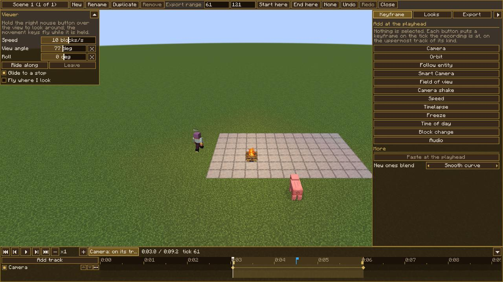
The parts
- The top bar, one row: the scene, the export range with Start here, End here and Trim, then undo, redo, Moments (the moments page), ... and Close.
- Viewer card (left): flight speed, view angle, roll, Ride along, a tick to show or hide the recorder's HUD, and ticks for the camera path, markers in the world, gliding to a stop, and flying where you look.
- Players card (left): see Watch.
- Right panel: three tabs, Keyframe, Looks and Export.
- Timeline (bottom): transport, speed, whether the camera follows its track, the time, the ruler, the moments lane, then one row per track.
Hover over anything for a short explanation.
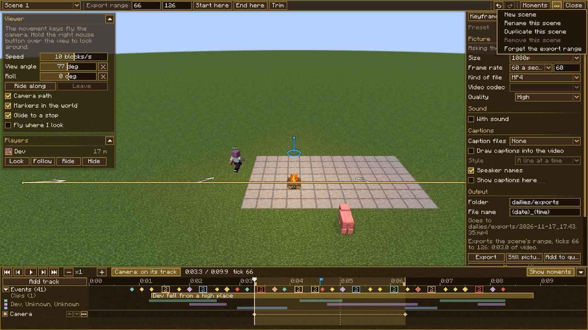
Scenes
A recording has one or more scenes. Each has its own tracks, looks and export range. Change scene with the dropdown at the left of the top bar. The "..." menu adds, renames, duplicates and removes scenes. A removed scene goes to the bin, and undo brings it back too.
To set what is exported
- Go to where the video should start and press Start here.
- Go to where it should end and press End here. Or type ticks into the two boxes and press Enter.
The range shows as a shaded band on the timeline; drag either end to move it. With no range set, an export runs from the first keyframe to the last. "Forget the export range" in the "..." menu clears it. Trim makes a new recording from the range.
To add a keyframe
- Go to the moment you want.
- For a camera keyframe, fly to where the camera should be.
- Press the kind you want in the Keyframe tab. It goes on the uppermost track of its kind, made if there is none.
"New ones blend" sets how new keyframes travel to the next one: hold then jump, straight, start slowly, end slowly, slow at both ends, or a smooth curve.
To change keyframes
- Click a diamond to select it and edit its fields. Shift+click or drag a box to select several; Ctrl+A selects all.
- Drag selected diamonds to move them. Double click jumps to one; right click for more.
- Ctrl+C copies, Ctrl+V pastes at the playhead, Delete removes.
- Ctrl+Z and Ctrl+Y undo and redo, without limit, each step named.
- Mouse wheel over the timeline zooms; Shift+wheel scrolls along it.

Tracks
A track holds keyframes of one kind. Add track adds one. Each row has a tick box to switch it on or off, arrows to move it, and a "..." menu to rename, switch off, move, clear or remove it. When two tracks of a kind both apply, the upper one wins.
Keyframes move the view only while the recording plays or exports, and only while "Camera: on its track" is lit. Flying off by hand turns it off; C or the button turns it back on.
Kinds of keyframe
| Kind | What it sets |
|---|---|
| Camera | Where the camera is and how it is turned: position, yaw, pitch and roll. Takes the view as it is now. Blends between keyframes. |
| Orbit | Circles a point while looking at it: centre, distance, height and angle. Change the angle between two keyframes to swing round. Centre on someone and click an entity to circle it as it moves: the circle follows it smoothly and keeps clear of blocks, and the centre numbers become an offset from its middle. Centre on a point goes back to a fixed point. |
| Follow entity | Ties the camera to an entity, measured from its feet, body, head or eyes with an offset. Keep place keeps that offset smoothly, follows the entity in through doors and round corners, and moves round to a clear view when it is hidden. Stay and watch stays put and turns to watch; when the entity has been hidden for a second, it cuts to a new place that sees it. See Smart Camera. |
| Smart Camera | Films a player by itself. See Smart Camera. |
| Field of view | How wide the lens is, 1 to 170 degrees. |
| Camera shake | A hand-held wobble: strength and frequency. |
| Speed | How fast the recording plays in the video. 20 ticks a second is as recorded, 10 half speed, 40 double. |
| Timelapse | Keyframes pair up: the stretch between a pair plays in the number of seconds given on the first. |
| Freeze | Holds the world still for some seconds while the camera carries on along its track. |
| Time of day | Sets the sky's time: 0 sunrise, 6000 noon, 12000 sunset, 18000 midnight. |
| Block change | Shows another block at a position from this tick on. Click the block, then type the new one. |
| Audio | An audio file from your disk that starts here, with a volume, and goes into exports. |
| Point of view | Shows another linked recording of the same moment from this tick, by a cut. See points of view. |
The timeline and its moments

Between the ruler and the tracks, the timeline shows this recording's moments:
- Events as marks coloured by kind: red a kill or a death, gold an advancement or a first, green somewhere new, lilac laughter or shouting, blue from the server, brass a marker. A number is that many close together; zoom in to tell them apart.
- Clips as bands. Click one to set the export range to it. Right click for "Make a scene from this clip", which makes a scene named after it, with its range and a suggested camera. Undo takes it away.
- Voice as one thin strip per speaker for when they talked. Hover to read the words, when they were written down.
Click a mark or a stretch of talk to go there. The fold arrow shrinks the rows to the events alone; Show moments hides them altogether.
The camera path
While editing, the camera's path is drawn through the world: a line where the camera and orbit tracks take it, a mark at each keyframe (click one to select it) and small arrows for where it looks. A Smart Camera stretch is drawn as it went the last time it played, paler, and dashed once its keyframe has changed. Untick "Camera path" in the Viewer card to hide it. It never appears in exports.
To fold the panels away
Each card and panel has a small arrow that folds it. Folded, the cards shrink to their titles, the right panel to tabs along the edge, and the timeline to its ruler.
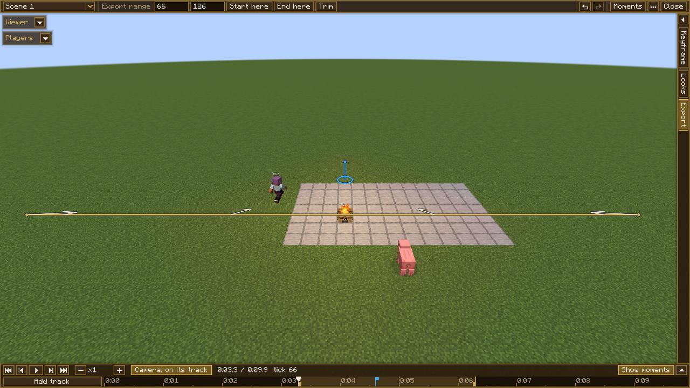
To work from the keyboard
- Tab moves from control to control: along the top bar, down the cards, through the right panel, then the timeline. Shift+Tab goes back.
- Enter or Space presses the control with the brass ring.
- In a box, Tab keeps what you typed and moves on.
- Esc lets go of the ring first; the next Esc closes the editor.
Looks
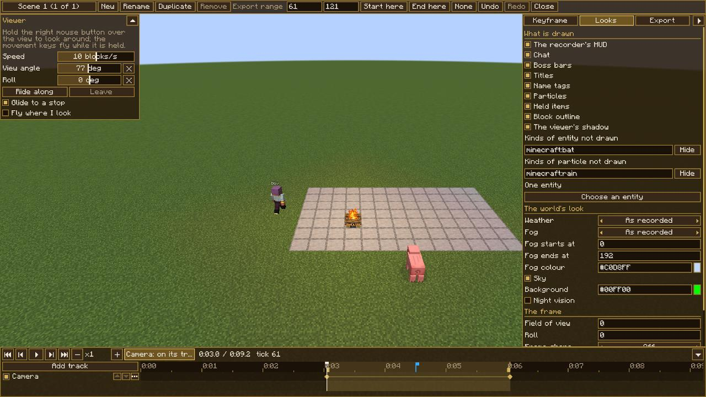
Looks belong to a scene and apply in playback and export alike.
- What is drawn: the recorder's HUD, chat, boss bars, titles, name tags, particles, held items, the block outline, the viewer's shadow, the scoreboard, the action bar, the hotbar, blocks, entities, players and beacon beams. Unticking blocks leaves sky, entities and particles, for keying.
- Kinds not drawn: type an entity or particle id, such as
minecraft:bat, and press Hide. - One entity: press Choose an entity and click it. Then hide it, give it another name, set its glow to always or never, or hide its name tag, cape or armour.
The world's look
- Weather: as recorded, clear, rain or thunder.
- Fog: as recorded, off, or your own start, end and colour.
- Sky: on or off. Off draws a plain background colour instead, for keying.
- Night vision: full brightness without the potion's tint.
- Server's packs: show the scene with the resource packs the server gave the recorder. Off uses only your own.
The frame
- Field of view and roll when no track sets them.
- Frame shape: 16:9, 9:16, 4:3, 1:1, 21:9 or your own, drawn over the view as a guide.
- Hold the picture to the frame shape: letterboxing. The view shows black bars, and exports come out in that shape, fitted inside the size asked for. A 21:9 scene asked for at 640×360 exports at 640×274.
- Thirds lines and a centre cross, shown only while editing, never in exports.
Smart Camera
A Smart Camera keyframe names a player and a way of filming them. From there until the next keyframe on its track, the camera places and aims itself. Every tracking camera in Dailies is smooth, keeps its player in frame and never goes into or through a block.
To film a player by itself
- Add a Smart Camera keyframe from the Keyframe tab.
- Click the player in the view, or choose them from a list. The recorder is the default.
- Choose a Way of filming: chase, tripod, orbit or director.
- Play. The camera works itself out from the recording, so playing again or exporting gives the same shots every time.
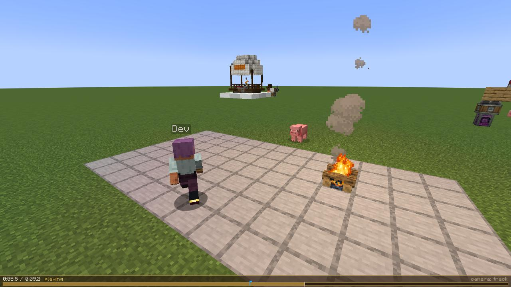

| Way of filming | What the camera does | Settings that matter |
|---|---|---|
| Chase | Follows behind the player, measured from the way they travel. Small turns and wobbles are ignored; a real turn swings the camera round them at its distance. It leaves more room in front as they speed up. It rises over ground behind them and stays under a cave's roof. Where there is no room behind (a cave, a doorway, a wall), it follows the way they came, round bends and in through doors. | Distance 6 and Height 2, in blocks. Side angle 0: 0 is behind, 90 to their right, 180 in front. Ignore turns under 15 degrees. Widen in flight 0.6, from 0 to 2. Catch-up 0.35 s. Heading from movement or body. |
| Tripod | Stands still and pans and tilts after the player. A dead zone stops small moves from swinging it. Placed By itself, it picks a place with a clear view of where the player is going: nothing in the way, a sensible distance, a little above eye level and beside their path, not in it. When they leave its view for good, it cuts to a new place. Placed Fixed, it stays where it is set. | Placed: by itself (the default) or fixed. Stand it where I am fixes it where the camera is now. Dead zone 0.12 of half the frame. Turn lag 0.25 s. |
| Orbit | Circles the player at a steady rate. It looks along the circle ahead and shrinks or lifts the circle to fit between blocks, slowing near them. When the player goes through a door and walls it out, it cuts to the nearest place with room and carries on round. | Radius 8 and Height 2. Degrees a second 20; a minus sign turns the other way. Start angle. |
| Director | Edits its own film. It cuts between chase, over the shoulder, tracking alongside, tripod and orbit shots, and opens with a wide shot whenever the player comes into a new kind of place. | Shortest shot 3 s and Longest shot 10 s. A May use switch for each kind of shot. Wide shot in new places, on. Seed. Distance, height and radius, which its own shots start from. |
How the director edits
- Establishing shots. Going into a cave, out into the open or into a building, it cuts to a slow, high, wide orbit, or to a tripod a dozen blocks off in a tight space.
- Shot length. No shot is under 1.5 seconds. A shot runs to the longest at walking pace, and nearer the shortest as the player speeds up. Flying and riding count as fast.
- Cutting on action. It cuts on a sharp turn, taking off, landing, getting on or off something, or a change in what the player is doing. It also cuts away at once when the view is blocked.
- No jump cuts. Each new shot looks from at least 35 degrees away from the last, so a cut never looks like a hiccup.
- One side of the action. It keeps to the same side of the way the player travels, so they never seem to turn round across a cut.
- Shots that suit the moment. Tight spaces get chase, over the shoulder and tripod shots. A player standing still gets orbits and tripods. Flying and riding get chase, alongside and tripod shots.
The same seed gives the same edit every time.
Framing, in every way of filming
- Screen X and Y place the player anywhere in the frame. ±0.333 is the rule of thirds.
- Lead room leaves space in front of a moving player.
- Auto zoom changes the lens to keep them the same size. Off, a fixed field of view applies.
- Fit what they ride frames a vehicle, contraption or craft together with its rider.
- Move in past blocks eases the camera in before a wall comes between it and the player, and back out after.
- Blend in sets how long the camera takes to move over from where it was. 0 is a cut.
Flight, vehicles and awkward places
| When | What the cameras do |
|---|---|
| Flying | With an elytra, in creative flight or at speed, chase and orbit move further back and higher, by Widen in flight. Chase follows climbs and dives. |
| Vehicles and craft | A boat, minecart, horse, Create contraption or flying craft is framed with its rider, and distances are measured from its edge. Its own blocks do not stop the camera standing close. When they hide the rider, the camera looks round, up or down for a place that sees them. Getting on or off something close by is eased over, not cut. |
| Doorways and caves | The camera never goes into a block nor through one; it slides along walls. Chase and Follow entity follow the player in through doors and along tunnels. Leaves and glass count as solid; water does not. |
| Hidden player | A camera stuck behind a wall for a second moves out by a cut. "Stay and watch" moves by a cut to a new place that sees the player once they have been hidden for a second, and cuts straight back onto them if they come out somewhere else. |
| Teleports and portals | A teleport, a portal or a jump in the timeline starts the camera afresh, by a cut. |
The Orbit and Follow entity keyframes and the players panel's Follow track in the same way. "Keep place" keeps its offset smoothly and moves round to a clear view when the entity stays hidden. An Orbit keyframe centred on someone circles them as they move.
How they were tested. Every tracking camera was filmed for a minute (30 to 35 seconds for each kind of flight and each vehicle) in a forest, a village with doors, a cave, the Nether, elytra and creative flight, a boat, a minecart, a horse and the Aeronautics balloon, all on one recorded route, and each film was measured for tracking, smoothness and the director's cuts. In the last filming run, 78 of 80 films had no hard fault. The two left are small jumps in the players panel's Follow, in the forest and at the start of creative flight, to be fixed.
Export
To export a video
- Set the export range on the top bar.
- Open the Export tab and choose a preset, or set the picture, file and sound yourself.
- Press Export.
Each frame is drawn at an exact moment of the recording, so a slow computer makes the same video as a fast one, only later. The window shows a small plate at its foot with the frame count, speed, time left and Cancel (Esc); the plate never gets into the video. A cancelled export keeps what was done as a file that plays. Afterwards playback is back where it was, and the editor says how it went: click the message to open the folder.
Still picture writes one PNG of the view now, at the size set. "More settings" has the rarer ones: an exact size in pixels, a bitrate, the encoder, supersampling, leaving the HUD out, a transparent background (with the sky off), stereo, the sound codec, separate tracks and replacing a file of the same name.
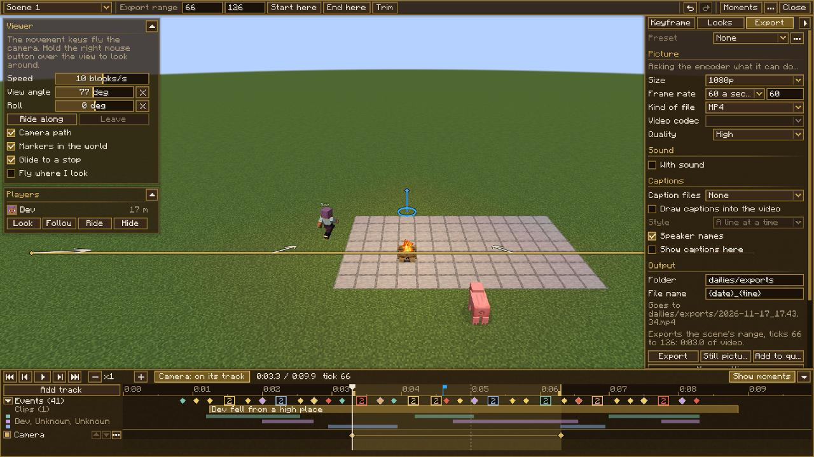
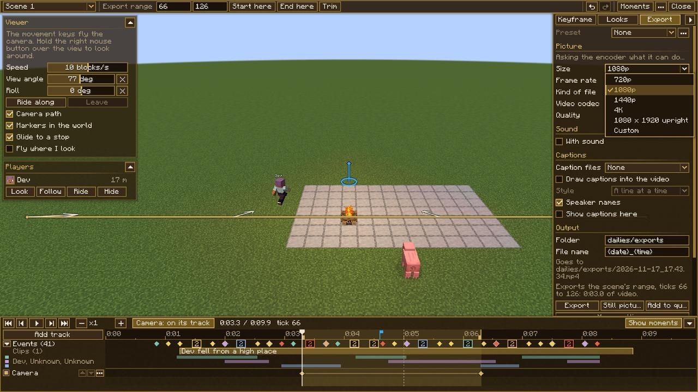
Presets
A preset fills in everything below it. Change anything and it is marked as modified. The "..." beside it saves, adds, renames and removes presets, and brings the built-in ones back.
| Preset | What it makes |
|---|---|
| YouTube 1080p60 | 1920×1080, 60 fps, MP4, H.264 or AV1, stereo AAC |
| YouTube 4K60 | 3840×2160, 60 fps, MP4, H.264 or AV1 |
| Shorts and Reels | 1080×1920, 60 fps. Warns past 60 seconds and exports anyway. |
| Editing master | 1920×1080, 60 fps, MOV, ProRes 422 HQ or DNxHR HQ, uncompressed sound with separate tracks |
| Smallest | 1280×720, 30 fps, MP4, AV1 |
A preset whose codec this computer cannot make uses the next it can (AV1, VP9, ProRes, DNxHR) and says so. File names can use {date}, {time}, {preset}, {scene}, {recording}, {size}, {fps} and {codec}.
Codecs
Only what this computer can really encode is offered, fastest first. Each says whether a graphics card does the work in hardware, and whose, or software does. Every hardware encoder is tried once before it is listed.
| Codec | Made by | Files |
|---|---|---|
| H.264 | A graphics card only: NVIDIA, AMD, Intel or Apple, or Windows' own when a card backs it | MP4, MKV, MOV |
| H.265 | A graphics card only, as for H.264 | MP4, MKV, MOV |
| AV1 | A graphics card where there is one, then SVT-AV1 in software, then libaom (slow) | MP4, MKV, WebM |
| VP9 | Intel graphics where there is one, then libvpx in software | MP4, MKV, WebM |
| ProRes 422 HQ | Software, for editing. ProRes 4444 with a transparent background. | MOV, MKV |
| DNxHR HQ | Software, for editing | MOV, MKV |
Dailies carries no software encoder for H.264 or H.265. The usual ones, x264 and x265, would force a GPL build of the encoder, which cannot ship inside a mod like this, and Cisco's patent licence for OpenH264 covers only copies downloaded from Cisco. So a computer without a hardware H.264 encoder is offered AV1, VP9 or an editing master, and the Export tab says why H.264 is missing. AV1 plays on YouTube and in current browsers.
The encoder is FFmpeg 8.1.2 in its LGPL build, packed inside the jar for Windows on 64-bit Intel or AMD processors only, for now. On Linux, macOS and Windows on ARM, the Export tab says so and offers numbered PNG pictures instead; everything else works the same. THIRD-PARTY-NOTICES.md has the details.
Sound
Tick With sound to put the game's sound in the file, with recorded voice chat and the scene's audio keyframes, in step with the picture. Recorded voice chat, there and in playback, is never placed left or right: a nearby player gets quieter with their distance from the camera, fading out at the voice chat's range, while group chat and your own voice are always at full volume. The sound codec is AAC for MP4 and MOV, Opus for WebM and MKV, or uncompressed for MOV and MKV.
Separate audio tracks
"Separate tracks" (under More settings) keeps the game, each speaker and the audio keyframes apart as well as mixed, all exactly as long as the video. Choose WAV files beside the video (clip.game.wav, clip.voice-Name.wav, clip.music.wav), named tracks inside an MKV or MOV, or both. The separate tracks add up to the mix, so a video editor can lower music under speech or cut one voice.
Captions
Captions come from the voice chat Moments wrote down, so they need AI on and a transcription server (see Moments). Players on the "Voices Left Out" list never appear.
- Caption files: SRT, WebVTT or both, beside the video, timed to it, speed, timelapse and freeze keyframes included.
- Draw captions into the video: burned into the picture, "A line at a time" or "Word by word" as short videos have them.
- Speaker names begins each caption with who said it. Show captions here previews them in the editor.
- The font, size, colour, outline and position are in the settings' Export group.
To queue exports
- Set up an export as usual and press Add to queue instead of Export. Do the same for as many scenes and recordings as you like.
- In the Queue panel at the foot of the Export tab, press Run in background or Run here.
Each job can be moved up or down, held back and let go, or removed. One that failed or was stopped runs again from the start. Stop stops the queue, keeping what the current job wrote; Clear finished tidies the list. The queue survives a restart. When it is done, your desktop shows a notification.
Exporting in the background
Run in background starts a second, hidden game with the same mods and settings, which works through the queue while your game stays playable. It can carry on overnight, even after you close your own game. Its small window hides once it has loaded. It never changes your settings, saves or recordings, and writes its log to dailies/worker.log.
If a second game cannot start, for example with too little free memory, the queue runs in this game and says why.
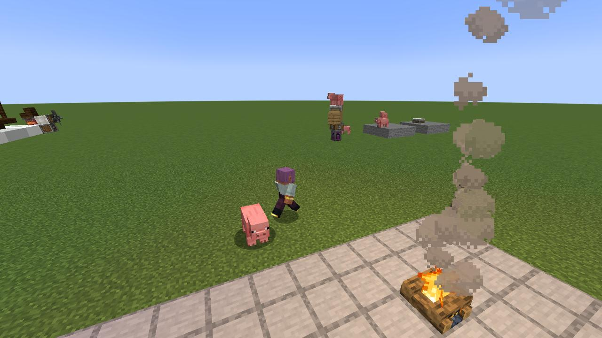
Moments
While you play, Dailies logs what happened, whether or not you are recording. Afterwards it finds clips worth watching. This is what the mod is named for.
What is logged
- Your kills, your deaths, and deaths of other players and bosses close enough to see.
- Boss encounters and defeats, advancements (yours, and others' from the chat), new biomes, dimensions and structures.
- Firsts: the first time you craft, place, mine or use something in that world. "Log Repeats" logs every one.
- Milestones: levels 10, 20 and 30, every 30 minutes of play, the first diamond item and enchanting table.
- Who you were with: meetings and groups forming, changing and breaking up.
- Markers, and moments from the moment key or
/dailies moment. - Craft and contraptions: a craft assembled, first boarded, its first flight, altitude and speed records, a craft lost, a Create contraption assembled, and trains leaving and arriving (from the companion).
- Voice bursts: laughter or shouting, found by loudness alone. Two people going loud together make one bigger moment. This needs no AI.
- Who spoke and when, from Simple Voice Chat. Dailies never opens your microphone itself.
- Events sent by the server through the companion.
Each event gets a score from 0 to 100. With "Event Pictures" on, an event scoring 50 or more keeps a small picture of the screen, about 320 pixels wide, taken without a hitch. No picture is ever taken while watching or exporting.
Clips
A clip is a stretch around events worth watching: 15 seconds before an event to 20 after, widened so nobody is cut off mid-sentence, with events close together joined. With transcripts, a lively conversation is a clip on its own. Each clip has a title, a summary, its events, who was there, what was said, a score and a suggested Smart Camera.
To open the moments page
It opens in your web browser, from any of these:
- Moments in the pause menu, or the top square button on the title screen.
- Moments on the editor's top bar.
/dailies moments.
The address is http://127.0.0.1:25595/. It is served by the MCP server, so it needs "Run the MCP Server" on.
To make a scene from a clip
On the page, press Make scene on a clip; or in the editor, right click its band. The scene is named after the clip, exports exactly the clip and has the suggested camera. Export on a clip, or Export selected, puts each on the export queue, and Start queue starts it in the background.

On the page
- Find clips builds them, with a lowest score and a largest number.
- Cue + camera opens the right recording at the clip with its suggested camera; Cue only without. Cue on an event goes five seconds early. It asks before pulling you out of a live world.
- Tabs: Clips, Events (filter, sort, the full record), Voice, Ignored (the ignore list) and Privacy.
- Live: new events, clips, transcripts and pictures appear the moment they happen. The lamp is green while live, brass while refreshing by the clock, grey when paused.
- Ignore kind hides that kind of event everywhere. Ignored events are still kept, and come back when you take them off the list.
- With AI off (the default), nothing is sent anywhere. Who spoke and when is still logged, and voice bursts still work, all on your computer.
- With "Use AI Services" on, the voice audio Moments captures, other players' included, is sent to the "Transcription Server" address to be written down. Each clip's length, player names, event descriptions and transcript (text, not audio) are sent to the "Summary Server" address for a better title and summary. An empty address keeps that service off.
- To leave someone's voice out, add their name to "Voices Left Out" (
momentsVoiceExcluded), in the settings or the page's Privacy tab. It takes effect at once. You still hear them, and they are still in a recording's own voice chat when "Record Voice Chat" is on, but nothing of their voice reaches Moments, the voice bursts or the transcription server. - A Test button beside an address asks that server once, when pressed, whether it is there.
- A shared session holds only your own voice lines.
- Recording other people's voices is yours to agree with them.
The MCP server
Dailies contains a Model Context Protocol server, so an AI agent can do what you can: record, open a recording, jump, edit, export, and search moments. Point an MCP client at:
http://127.0.0.1:25595/mcp
It listens on this computer only, unless you open it to others. "Run the MCP Server" switches it off, and "Port" moves it. Changing either takes effect without a restart. The same address serves the moments page at /.
To reach it from another machine
- Set "Listen On" to one of this computer's network addresses, or
0.0.0.0for all of them. - Dailies makes a "Remote Access Token". Treat it as a password: anyone who has it can drive the game. Clear it to have a new one made.
- On the other machine, connect over HTTPS to this computer's address and port, sending
Authorization: Bearer <token>. The certificate is made by Dailies; its "Certificate Fingerprint" is in the settings and the log, for the client to pin.
Only machines on "Allowed Clients" are answered: by default the private local-network ranges. Five wrong tokens from one address within a minute lock it out for a minute. The moments page asks for the token once over HTTPS.
This computer keeps plain local access all the while: http://127.0.0.1, no token, as before.
Settings
Open Dailies' own settings screen from the pause menu, the title screen, the mods list's Config button, or /dailies config. Settings live in config/dailies-client.toml and take effect without a restart. Open the file opens it; a change made there by hand shows on the screen a moment after it is saved.
- Groups fold: click a group's title. Each shows how many settings it has and how many are changed.
- Search: start typing anywhere, or Ctrl+F. It finds settings by any words of their name or description.
- Reset: each changed setting can go back to its default, and Reset group does a whole group.
- Every choice is a dropdown. Every number is a slider with a box to type into, both held to the range.
- Hover over a setting to read what it does.
- The AI server addresses and "Listen On" are checked as you type, and have a Test button that says whether a server answers.
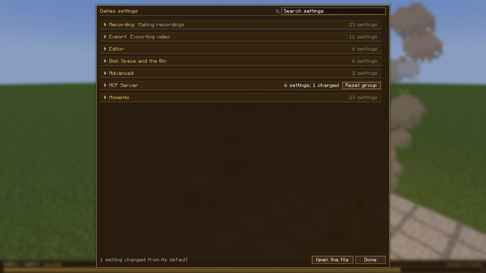

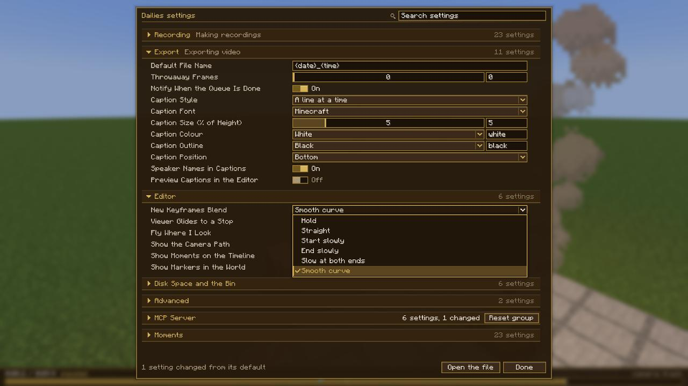
The settings that matter most
| Setting | Default | What it does |
|---|---|---|
| Start by Itself | Off | Starts a recording on joining any world or server. |
| Finish on Leaving | On | Finishes the recording on leaving. Off, the next world joined carries on the same recording. |
| Save Without Asking | Off | Saves under the date and time without asking for a name. |
| Show Notices | On | On-screen notices when a recording starts, pauses, resumes, finishes or fails. |
| Record Voice Chat | On | Keeps the voice chat you hear, per speaker (needs Simple Voice Chat). |
| Marker 1 to 4 | Red, saves position | Each marker key's colour, words, and whether it stores where you stand. |
| Moment Key Label | Good moment | The words the moment key logs. |
| Seconds between Stored Worlds | 5 | How often the whole world is stored afresh. Shorter makes going back quicker and the file a little larger. |
| Default File Name | {date}_{time} | The name of an exported file. |
| Use Every NVIDIA Encoder | On | An NVIDIA card encodes HEVC and AV1 on all of its encoding units at once, each taking a strip of the frame. On an RTX 5090, 4K AV1 exports run about two and a half times as fast. Off for the last bit of quality. |
| NVIDIA H.264 Encoders at Once | 3 | H.264 frames cannot be split that way, so an NVIDIA card runs this many H.264 encoders at once instead, each taking a second of the video in turn, and the parts are joined at the end without being encoded again. On an RTX 5090, 4K H.264 exports run about twice as fast. It holds frames in memory while it runs (up to about 1.5 GB at 4K, less when the game has less to spare). 1 uses a single encoder. |
| Throwaway Frames | 0 | Extra frames drawn and thrown away before each one kept, for shader packs that build up their picture over time. |
| Caption Style, Font, Size, Colour, Outline, Position | A line at a time, Minecraft, 5%, white, black, bottom | How captions drawn into the video look. |
| New Keyframes Blend | Smooth curve | How a new keyframe travels to the next. |
| Days in the Bin | 30 | How long deleted things can be restored. |
| Bin Recordings Older Than | 0 (keep all) | Moves old recordings to the bin, sparing starred and exported ones. |
| Warn Below, Pause Recording Below | 20 GB, 5 GB | Free disk space at which recording warns, then pauses. |
| Run the MCP Server, Port | On, 25595 | The MCP server and the moments page. |
| Listen On | 127.0.0.1 | Leave it alone to keep the server on this computer. See the MCP server. |
| Log Moments | On | Keeps the log of what happens while you play. |
| Use AI Services | Off | The one switch for transcription and model-written summaries. Off, nothing is sent anywhere. |
| Transcription Server, Summary Server | The owner's own machines | Where voice audio and clip text go with AI on. Empty keeps that one off. |
| Voices Left Out | Empty | Players whose voice never reaches Moments or the transcription server. |
| Ignored Events | Empty | Kinds of event hidden from every list and clip, such as block_mined. * matches anything. |
| Event Pictures | On | A small picture with each big moment. |
Not yet checked
The last scripted run passed, but some things it cannot do or prove. These are untested until someone tries them.
- Background export in a second game. The run did not start one; it is started only when asked for.
- Captions with real speech. No transcription server was reachable, so the caption files were empty and nothing was burned into the picture.
- A real second player and real voice chat: meetings, groups, another player's death or riding your craft, voice heard, recorded, played back and exported with each speaker's name, and a real burst of laughter. The run feeds in sound and a stand-in friend directly.
- A dedicated server with Create, Sable, Aeronautics and the companion, including one that pushes a resource pack while you join.
- The moments page in a real browser: cueing from a live world and the title screen, falling back when the network drops, and opening it from another machine over HTTPS.
- The eye test: flying the helicopter and balloon by hand and watching them back, and feeling for any hitch when an event picture is taken during an hour's play.
- Distant Horizons: not installed in the test game, so far terrain in playback was not tried.
- A shader pack: none was set. Complementary Shaders - Reimagined was named as the pack to try, but has not been tested.
- Aeronautics effects in a video: whether they move at the video's pace can only be judged by eye.
- AMD, Intel and Apple encoders: only the test computer's own graphics card has made video.
- The encoder build for other platforms: Linux, macOS and Windows on ARM export PNG pictures only until a build of Dailies' own is proven.
- Two small jumps in the players panel's Follow: in the forest and at the start of creative flight, the last camera films caught a pop. To be fixed.
- The Smart Camera by eye: the films measure tracking, smoothness and cuts; whether the shots look good is judged from their stills by a person.
- AI on: transcription keeping up in real time was not measured, since AI was off.
- McpCraft job board moments: the installed McpCraft does not tell other mods about its job board, so these were not tried.
- Exporting the same stretch from every point of view as a batch: the batch was listed but not started.
- Putting a scene in the bin and back, and opening the trim screen from the editor: no long enough recording was left to do it with.
- Pausing a recording when the disk is nearly full: only the decision is tested, not a real full disk.
How it was tested
The last combined scripted run passed on 17 November 2026. It ran in the modded game, with the built jar beside Create, Sable, Create Aeronautics, Simple Voice Chat, Sodium, Iris, McpCraft and the companion, and included both tours. The script drives the real game through Dailies' own tools and checks recording, playback, machines, server resource packs, combining and trimming, editing and export, codecs and presets, moments, the MCP server, privacy, the library, the settings screen, looks and other renderers.
The tours. The bestiary records the awkward parts of the game: the Wither, the Ender Dragon in The End, creepers, ghast and blaze fireballs, experience orbs and a long list of entities and blocks that do not behave like a walking mob. The real-world tour records a default generated world as people really play it: caves, oceans, mountains, structures, mobs, weather and day, the Nether through a real portal, and a stretch of survival. Both write the live game down as they go, then compare playback with it, reached by playing, by jumping forwards and by jumping backwards, and report every difference at the end.
To run the tests yourself
| Command | Does |
|---|---|
gradlew test | The unit tests. |
gradlew runTestClient | The scripted run in a plain game, about 2 minutes. Prints DAILIES TEST PASSED, or DAILIES TEST FAILED: and the reason, then closes. |
gradlew runTestModded | The same with the built jar beside the other mods and the companion, about 3 minutes. Builds the companion first. -Pdailies.modsFolder=<folder> takes the other mods' jars from another folder. |
gradlew runTestModded -PdailiesFlags=dailies.test.bestiary,dailies.test.realWorld | The combined run, with both tours. Much longer. |
gradlew runTestModded -PdailiesFlags=dailies.test.cameraFilms,dailies.test.cameraFilmsOnly | Only the camera films: every tracking camera filmed in every place of the recorded route, measured, with every fault listed at the end. Videos, stills and measurements go to dailies/camera-films in the game folder. Long. |
gradlew runHandsOn | Sixty seconds at the controls while recording, then the recording left open in the editor for you to watch. |
gradlew runManualShots | Retakes this manual's pictures. |
Steps that could not run, such as a mod not installed or something that needs a second player, are listed as DAILIES TEST skipped: lines. Other flags add steps left out by default: dailies.test.worker starts the background export game, and dailies.test.smartCamera adds the Smart Camera checks.